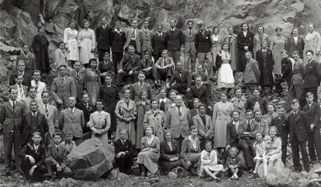

Reform von Mutschler
Hersteller des Geha C4L
Stand: 14.02.2026
Reform und Mutschler waren ursprünglich zwei verschiedene Hersteller mit Fokus auf Füllfederhalter aus Heidelberg.
1919 wurde Reform nahe Heidelberg von Ludwig Jung gegründet. Er warb zwei Kaweco-Mitarbeiter ab, die zu Mitinhabern von Reform wurden.
1922 zog Reform dann nach Heidelberg hinein, 1928 nach Nieder-Ramstadt.
1929 wurde Mutschler von weiteren ehemaligen Kaweco-Mitarbeitern, mit Philipp Mutschler als Inhaber, gegründet. Kurz zuvor war Kaweco insolvent gegangen.
Reform wurde 1956 aufgelöst. Mutschler übernahm den Markenname, während ein anderer Hersteller, ERO, Reforms Niederlassung übernahm.
Mutschler, weiterhin in Heidelberg, zog 1973 in die Dossenheimer Landstraße 100 derselben Stadt. Es ist gewissermaßen eine Rückkehr zum Anfang, da an dieser Adresse ehemals Kaweco herstellte.
Um diese Zeit stellte Mutschler wohl auch für Pelikan und Geha Vierfarbenkugelschreiber her.
Zumindest der Geha C4L Vierfarbenkugelschreiber dürfte von Reform sein, da eine Version mit 'Reform'-Aufschrift existiert.

Nach einem weiteren Umzug 1999 wurde die Firma Mutschler Anfang des 21. Jahrhunderts endgültig aufgegeben.
Mehrfarbstifte von Mutschler/Reform
Mutschler stellte mindestens die Sichwahlkugelschreiber für Geha her. Es ist möglich, dass auch andere Vierfarbenkugelschreiber von Mutschler für andere Firmen hergestellt wurden.Modelle sind: Geha C4, Geha C4L.
Der Geha C4L ist identisch mit dem Montblanc Carrera.
Er wurde ebenfalls unter der Marke "Geha Jeans" verkauft.
Vom Geha C4L und Geha C4 existieren Demonstrator(=transparente)-Varianten.
Eine Reform-Version des Geha C4L Demonstrator existiert.
In heutiger Zeit: Das Demonstrator-Modell des Geha C4L hat 2024-2025 hohe Aufmerksamkeit bei jungen japanischen Schreibwarensammlern erhalten und wurde dort zu einem beliebten Sammlerobjekt.
Reform Füllfederhalterfabrik (vor Mutschler)
Autor: Volker Teutschländer, 18.01.2012 Archivierung der inaktiven Webseite http://www.muehltal-odenwald.de/

Noch immer prangen Füllfederhalter und Kugelschreiber an der Fassade des ehemaligen Bürogebäudes der „Reform“ - so heißen die längst umgenutzten Baulichkeiten bei Ortskundigen zum Teil noch heute. Sie erinnern an die Glanzzeiten der Federhaltermanufakturen im nordwestlichen Odenwald, unter denen „die Reform“ in Nieder-Ramstadt ehemals eine führende Rolle spielte. Der Zusatz „ERO“ an der Werbeeinrichtung macht schon darauf aufmerksam, daß Füllhalterfabrikation in der „Reform“ Geschichte ist – ja, auch in ihrem Nachfolgeunternehmen ERO.
2010 ist Inge Wegt geb. Jung, die letzte Tochter eines der Firmengründer, die 1928 mit ihrem Unternehmen von Heidelberg nach Nieder-Ramstadt übersiedelten, gestorben. Ihr Vater, der Kaufmann Ludwig Jung, der Drechsler Paul Fortran und der Holzdreher Johann Heinz gründeten 1919 in St. Ilgen bei Heidelberg ein Unternehmen für die Herstellung von „Sicherheitsfüllhaltern“.
Nach der Schließung der Zündholzfabrik Reichenbach und Bessunger in der Ober-Ramstädter Straße in Nieder-Ramstadt übernahmen 1928 die drei Unternehmer die Liegenschaften und verlegten den Betrieb nach Nieder-Ramstadt. Unter der Marke „Reform“ stellten sie Füllfederhalter, Tintenschreiber und Drehbleistifte von der einfachen bis zur Luxusausführung her, die zum größten Teil exportiert wurden.
Gefertigt wurde auf einfachen Drehbänken und Revolverdrehbänken. Außenkonturen wurden später auch geschliffen. Ein Füllhalter bestand aus 26 Einzelteilen. Als Rohstoffe wurden Hartgummi, Galalith und gehärtetes Celluloid nach einem Patent der Firma Dietz und Böttcher aus der Hahnmühle bei Pfungstadt verarbeitet. Ein Mitarbeiter produzierte in der Woche rund 120 Stück.
Ausgeliefert wurde nicht über den Großhandel, sondern Vertreter förderten den Export des „Worldpen“ in ganz Europa, in Mittelamerika und in Asien. 99 v.H. der Erzeugnisse gingen ins Ausland. In einzelnen Ländern kam die Marktführerschaft der „Reform“ einer Monopolstellung gleich. Im Elsaß entstand ein Zweigbetrieb. In Deutschland war die „Reform“ weit weniger bekannt als auf dem Weltmarkt. 1941 wurde die „Reform Füllfederhalterfabrik Gmbh“ umbenannt in „Reform Füllfederhalterfabrik Heinz & Jung“, Fortran gehörte offenbar nicht mehr zu den Inhabern. Um diese Zeit hatte der Betrieb mit etwa 100 Arbeitern und Angestellten seinen höchsten Beschäftigtenstand erreicht.
Thomas Neureither (Heidelberg), der sich mit der Füllfederhalter-Produktion in und um Heidelberg befaßt, ist auch Kenner der Nieder-Ramstädter Reform auf Grund zweier Schriften zur Firmengeschichte und umfangreicher Nachfragen bei Inge Wegt. Neureither hat das knappe Wissen, das hier a Standort der ehemaligen Reform bekannt ist, um einige wichtige Ergänzungen bereichert, u.a.:
„Die Weltwirtschaftskrise machte sich in Europa mit einer Verzögerung bemerkbar. Nach einer wirtschaftswissenschaftlichen Arbeit aus dem Jahr 1950 war 1932 das schlechteste Absatzjahr der Füllhalterindustrie. Die Abwertung des englischen Pfundes und der Aufbau massiver Schutzzölle erschwerte den internationalen Handel, der massive Goldpreisanstieg zwang zu einer Umstellung der Federnproduktion. Der Export konnte aber umgestellt werden und das Inlandsgeschäft zog spürbar an. Im Sog der Wiederaufrüstung wurden auch erhebliche Mengen Füllhalter benötigt. Der Bedarf an Schreibgeräten war dermaßen hoch, dass die Bestellungen aus der Bevölkerung, wenn überhaupt, nur nachrangig befriedigt werden konnten. Obgleich 1943 ein massiver Rohwarennotstand zu bemerken war, war die Füllhalterproduktion in Deutschland 1945 sogar noch höher als 1936!“
Neureither hat Kenntnis davon, daß auch unmittelbar nach dem Kriege, anders als es heute oft heißt, hervorragende Erfolge erzielt wurden. „Tatsächlich gab es nach dem Kriege eine Umbruchphase mit einer Neuorientierung. Der Bedarf an Schreibgeräten war aber weltweit nicht zurückgegangen und die große Zahl von Firmen-Neugründungen nach dem Krieg zeigt die Beständigkeit dieses Wirtschaftszweiges. Ein Problem war sicher die Zurückführung der Produktion auf Friedensverhältnisse. Mir liegt eine Anfrage eines Geschäftes aus Regensburg von 1943 vor, deren Bestellung von der Reform wegen "Betriebsumstellung" abgeschlagen werden musste. Dieses bedeutete zu dieser Zeit, dass Speers Zwangsbewirtschaftung das Werk zur Rüstungsproduktion konvertiert hatte.“
Wegen der international ungewöhnlich guten Reputation der Firma sei der „Reform“ weltweit Kredit gezollt worden, die Exportware sei oft schon mit der Bestellung im Voraus bezahlt worden. Nach einem Aufsatz, der Neureither in Teilkopie vorliegt, seien bis zu 95 v.H der Auslandslieferungen im voraus bezahlt worden. Die Reform habe sogar für sich in Anspruch nehmen können, als erste Firma in Deutschland einen unkündbaren Akkreditiv-Kredit nach dem Kriege aus dem Ausland erhalten zu haben. Fast der ganze Zahlungsverkehr mit dem Ausland habe „zur Zeit (verm. 1952)“ auf dieser Grundlage beruht.
Thomas Neureither hat für die vorliegende Beschreibung der erfolgreichen, wenn auch (in Nieder-Raumstadt) nicht einmal dreißigjährigen Reform-Geschichte Abbildungen zweier Produktionsmaschinen aus seinem Gerätepark überlassen, eine Wolff-Jahn-Drehbank und eine Guillochiermaschine (sprich: Gilluschiermaschine). Neureither: „Auf die sonst so schmucklose Oberfläche eines schwarzen Hartgummifüllers konnte ein filigranes Kratzmuster aufgetragen werden, dies machte das Schreibgerät auch griffiger. Mit dieser Maschine übertrugen kleine Industriediamanten ein in einer mechanischen Scheibe codiertes Muster. Guillochieren war nach seinem Erfinder, dem französischen Mechaniker und Goldschmied Guillot benannt. Ursprünglich wurden Tabakdosen oder Taschenuhrdeckel mit einem Korn- oder Zykloidenmuster verziert. Dies zeigt auch mit welcher Liebe und Präzision Füllhalter der 20er und 30er Jahre hergestellt und von ihren Besitzern oft wie Schmuckstücke verwahrt wurden.“
„Das Ende der Reform 1956 war deshalb eigentlich recht kurios: Ludwig Jung weigerte sich, die handwerkliche Qualität seiner Produkte gegen die in dieser Zeit noch zweifelhafte Machart der Massenware aus Spritzgussteilen einzutauschen, und hat den Betrieb, der auf dieser Basis nicht mehr haltbar war, lieber geschlossen. Tatsächlich hat es lange Zeit eine stillschweigende Vereinbarung zwischen den Produzenten gegeben, die Spritzgussmaschinen, die es seit 1938 gab, nicht für die Füllhalterproduktion einzusetzen. Neben den befürchteten Aufständen der Fabrikarbeiter, die vom Verlust ihrer Arbeit bedroht gewesen wären, wollte man sich den Weltruf deutscher Qualitäts-Füller nicht zerstören. Insbesondere die gepressten Gewinde waren – und sind bis auf den heutigen Tag – den handgeschnittenen Gewinden.
Die bei ebay – teilweise ungebraucht – angebotenen Reform-Füllhalter, beziehen sich zum allergrößten Teil auf Reform-Füller aus Heidelberg. Die Marke war an die Firma Mutschler-Schreibgeräte verkauft worden, die den Handelsnamen und das geflügelte 'R' bis zu ihrem eigenen Konkurs weiterverwendete. Das sind zwar gute Alltagsfüller gewesen, aber - kein Vergleich mit den Nieder-Ramstädter Celluloid-Füllern und deren Goldfedern.“
1958 übernahm die Firma Rodenhäuser aus Ober-Ramstadt „Ero“ die Liegenschaften der Reform und verlegte ihre Schreibgeräte-Produktion hierher.